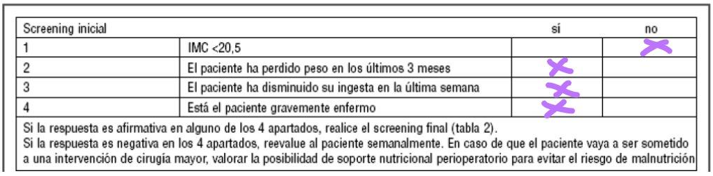
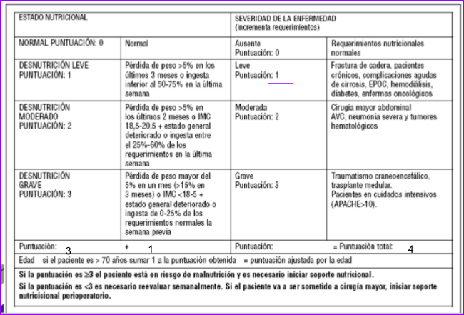
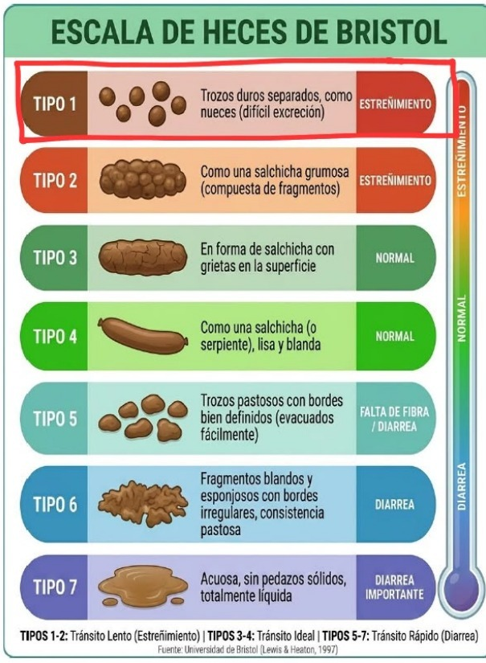
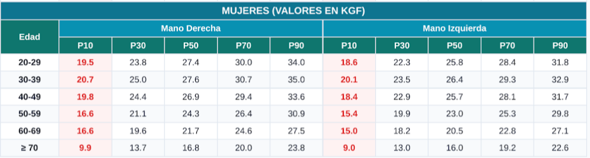
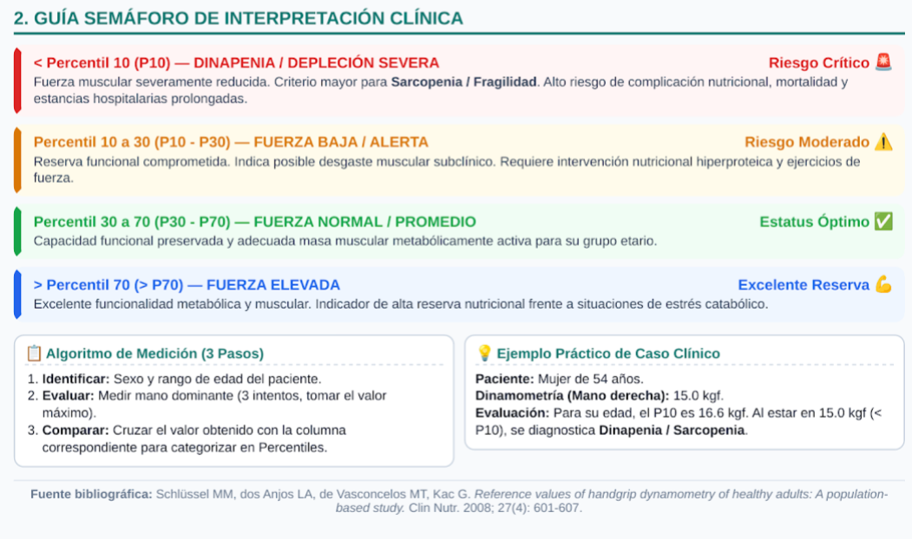
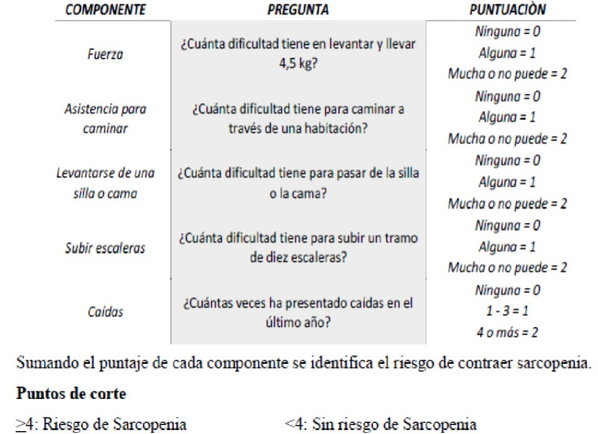
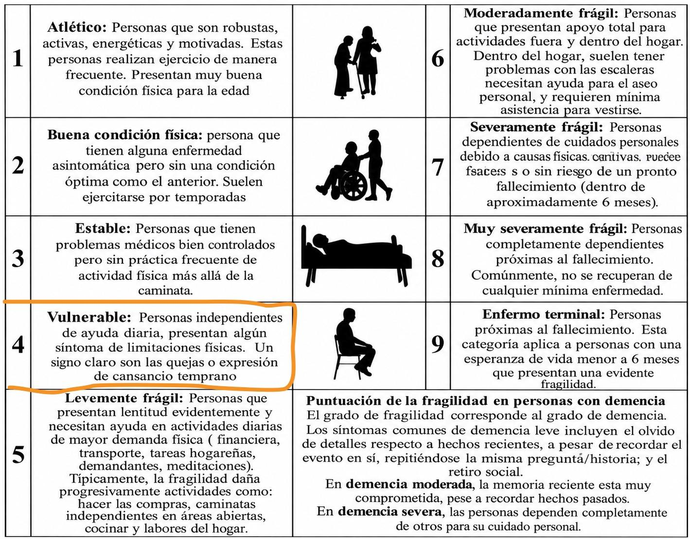
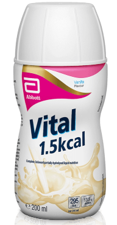

📋 Historia Clínica - Filiación y Antecedentes
Datos de identificación, anamnesis, funciones biológicas y tratamiento farmacológico
Arrastra tu archivo PDF aquí o haz clic para seleccionarlo. El sistema extraerá automáticamente filiación, antecedentes, diagnóstico, tratamiento y la tabla de 18 parámetros bioquímicos.
1. Datos de Filiación
2. Enfermedad de Ingreso y Signos Vitales
3. Funciones Biológicas
4. Antecedentes y Tratamiento Farmacológico
🔍 1. Evaluación Global Subjetiva: Tamizaje de Riesgo Nutricional NRS-2002
Herramienta estándar para identificar presencia de riesgo de malnutrición hospitalaria
Screening Inicial (Preguntas de Filtro)

| # | Criterio de Screening Inicial | Respuesta |
|---|---|---|
| 1 | ¿IMC < 20.5 kg/m²? | |
| 2 | ¿El paciente ha perdido peso en los últimos 3 meses? | |
| 3 | ¿El paciente ha disminuido su ingesta en la última semana? | |
| 4 | ¿Está el paciente gravemente enfermo? (ej. UCI, patología severa, diálisis) |
Screening Final Cuantitativo

Puntaje seleccionado: 3 puntos
Puntaje seleccionado: 1 punto
📏 2.1 Evaluación Antropométrica
Indicadores de composición corporal, reservas grasas y reservas musculares
🧪 2.2 Evaluación Bioquímica con Analizador Inteligente
Detección de analitos elevados/disminuidos y generación de interpretaciones fisiopatológicas
Tabla de Parámetros Bioquímicos e Interpretación
| Datos Bioquímicos | Resultados | Valores Normales | Estado | Interpretación Fisiopatológica y Nutricional |
|---|
🩺 2.3 Examen Clínico Nutricional por Órganos
Signos clínicos orientados a deficiencias de micro y macronutrientes
| Órgano / Sistema | Signo Clínico Observado | Probable Alteración Nutricional |
|---|
🥗 2.4 Evaluación Dietética (Recordatorio de 24 Horas)
Análisis del patrón de consumo, densidad de nutrientes e incompatibilidades
💩 2.5 Escala de Heces de Bristol (Evaluación Gastrointestinal)
Haz clic en el tipo de heces correspondiente para registrar el tránsito intestinal

Tipo 1: Trozos duros separados
Similares a nueces, difíciles de evacuar. Estreñimiento importante.
Tipo 2: Salchicha grumosa
Compuesta de fragmentos compactos. Estreñimiento leve/tránsito lento.
Tipo 3: En forma de salchicha
Con grietas en la superficie. Tránsito intestinal normal.
Tipo 4: Lisa y blanda
Como una serpiente o salchicha lisa. Tránsito intestinal ideal.
Tipo 5: Trozos pastosos
Bordes definidos, evacuados fácilmente. Falta de fibra dietética.
Tipo 6: Fragmentos blandos y esponjosos
Bordes irregulares, consistencia pastosa. Diarrea leve.
Tipo 7: Acuosa sin pedazos sólidos
Totalmente líquida. Diarrea importante.
🚶♀️ 1. Prueba de Velocidad de la Marcha (6 Metros)
Ingresa únicamente los segundos cronometrados en la prueba presencial
✊ 2. Dinamometría de Mano (Fuerza de Agarre - Schlüssel et al., 2008)
Evaluación de la fuerza isométrica máxima y reserva muscular en 3 intentos
Según edad y sexo


Dinapenia / Depleción Severa • Riesgo Crítico. Criterio mayor para sarcopenia y fragilidad.
Fuerza Baja / Alerta • Riesgo Moderado. Desgaste muscular subclínico. Intervención hiperproteica.
Fuerza Normal / Promedio • Estatus Óptimo. Capacidad funcional preservada para grupo etario.
Fuerza Elevada • Excelente Reserva. Reserva nutricional y funcional alta frente a estrés catabólico.
📋 3. Cuestionario SARC-F (Tamizaje Rápido de Sarcopenia)
Versión validada en español. Puntuación de corte ≥ 4 puntos define riesgo de sarcopenia

👵 4. Escala Clínica de Fragilidad (ECF / Rockwood Clinical Frailty Scale)
Haz clic en la categoría correspondiente para asignar el nivel de fragilidad (1 al 9)

Muy en forma / Atlético
Robusto, activo, motivado. Realiza ejercicio con frecuencia.
En forma
Sin enfermedad activa, pero menos en forma que nivel 1. Camina a menudo.
Estable / Manejándose
Problemas médicos bien controlados, sin práctica frecuente de ejercicio.
Vulnerable
Independiente, pero con quejas de cansancio precoz o lentitud en actividades.
Levemente frágil
Lentitud evidente; necesita ayuda en actividades instrumentales (compras, finanzas).
Moderadamente frágil
Necesita ayuda dentro y fuera del hogar para vestirse, asearse o cocinar.
Severamente frágil
Dependencia total para cuidados personales. Estable clínicamente.
Muy severamente frágil
Completamente dependiente, cerca del final de la vida tras enfermedad menor.
Enfermo terminal
Esperanza de vida menor a 6 meses sin ser necesariamente frágil previamente.
🩺 3. Diagnóstico Nutricional en Formato PES
Problema (P) relacionado con Etiología (E) evidenciado por Signos y Síntomas (S)
- NC-1.4: Función gastrointestinal alterada (gastroparesia, vómitos, intolerancia oral)
- NC-1.1: Dificultad para deglutir (disfagia severa)
- NI-2.1: Ingesta oral inadecuada / Nula (régimen de NPO)
- NC-2.2: Valores de laboratorio alterados relacionados con nutrición (uremia, hipoalbuminemia, hiperfosfatemia)
- NI-5.3: Ingestión energético-proteica insuficiente (desgaste proteico-energético DPE)
- NC-3.3: Sobrepeso / Obesidad con sarcopenia (obesidad sarcopénica)
🥣 4. Intervención Nutricional: Soporte Enteral Especializado
Cálculo de requerimiento energético, macronutrientes, nutriente limitante y módulos
1. Vía de Soporte y Estimación Energética (Regla del Pulgar de Vidal)
2. Distribución de Macronutrientes y Requerimiento Hídrico
Inicio NET: 56 g
Inicio NET: 188 g
Inicio NET: 46 g
3. Fórmula Enteral y Nutriente Limitante

Vital® 1,5 kcal Líquido (Abbott Nutrition)
4. Aporte de la Fórmula vs Requerimiento (Déficit y Módulos)
| Nutriente | Requerimiento (Inicio) | Aporte Fórmula (835 ml) | Falta / Déficit | Módulo Nutricional Agregado | Aporte Final | % Adecuación |
|---|
📊 5. Monitoreo y Seguimiento Nutricional
Estrategias de control protocolizadas a corto, mediano y largo plazo
📑 6. Conclusiones y Vista Previa del Informe Final
Síntesis clínica global lista para entrega académica o inclusión en historia clínica
Conclusiones del Abordaje Nutricional:
Lic. en Nutrición y Dietética
USIL - Nutrición Clínica